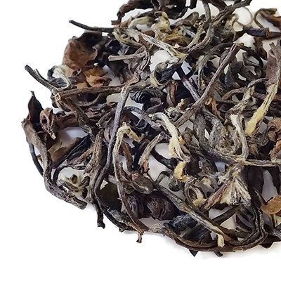

LUPICIA 5043 · g12505043
동방미인 특급
東方美人 特級
Oriental Beauty／トウホウビジン トッキュウ

熟した果実や蜂蜜を思わせるゆったりとした優雅な香りに、甘く上品な余韻が続きます。「東方美人」の名で世界に知られる、希少な台湾烏龍茶。
東方美人は、18世紀から20世紀中頃にかけて、その優れた品質と希少性から、世界屈指の高級茶としてその名をとどろかせた、台湾を代表する銘茶です。英語ではオリエンタル ビューティー（ORIENTAL BEAUTY)と呼ばれており、お湯を注ぐと茶葉が美しく舞うことから、イギリスの女王がこの名を付けたとも言われています。蜂蜜や熟した果実を思わせる特有の甘い香りが特徴です。台湾の中でも主に、桃園市・新竹県・苗栗県の3都市にまたがるエリアと、文山エリアの2か所のみで作られています。
東方美人が持つ、独特の甘い蜜のような芳香が生まれる理由の一つとしては、小さな虫「ウンカ」による影響が挙げられます。ウンカが茶葉を噛む時に、ウンカが持つ酵素が茶葉の成分と反応することで、五色にも例えられる茶葉の豊かな色合いと、甘い香りの香気成分を生み出しています。その小さな1芯2葉の茶葉を丁寧に手摘みし、職人の手によって約24時間かけて製茶を行います。おいしい東方美人を作るためには自然由来の茶葉の育つ条件と、熟練の技の両方が必要不可欠なため、大量生産が難しく、希少性が高いお茶です。
東方美人の伝統的な作り方である重発酵で、オーソドックスで上質な香りと味わいのお茶に仕上げました。一般的な生産シーズンは概ね5月下旬から11月頃までですが、特に甘みが強い6月から8月に摘まれたお茶を使用しています。
- 상품번호
- 5043
- 상품 형태
- 25g 봉입
- 가격
- 1,980円
- 판매 안내
- ※상미기한：제조일로부터2년
- 원재료
- 半発酵茶※商品の改定などにより、商品パッケージの記載内容が上記内容と一部異なる場合がございます。
- 원산지
- 台湾※商品の改定などにより、商品パッケージの記載内容が上記内容と一部異なる場合がございます。
- 찻잎
- 6g
- 물
- 熱湯
- 우림 시간
- 45秒-1分
- 우림 횟수
- 4-5回
다른 포장
보관된 상품 정보 갱신일: 2026-10-27